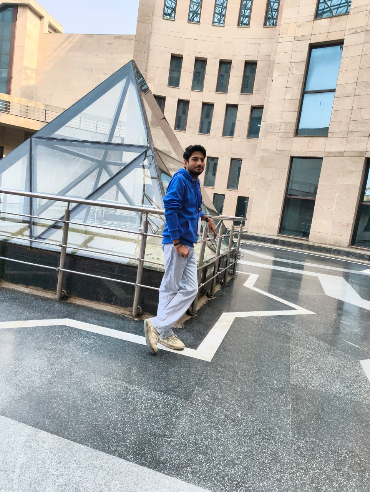

Warish Hussain
Environmental Analyst
Turning climate & spatial data into insights | GIS | Remote Sensing | ESG | Sustainability | Climate Risk
About Me
I am an environmental professional with a background in environmental science, sustainability, and geospatial analysis. I work on understanding climate and environmental challenges through GIS, remote sensing, and climate data analysis, with interests spanning climate risk assessment, urban ecology, heat stress, and nature-based solutions. I use tools and methods including Python, GIS, remote sensing, climate datasets such as ERA5 and CMIP, and sustainability frameworks to support data-driven environmental decision-making. I am currently seeking opportunities in Climate Risk Analysis, GIS and Geospatial Analytics, Sustainability Consulting, and Environmental Data Analysis in Delhi-NCR or remote roles.
Skills
-
GIS & Geospatial Analysis
- QGIS, ArcGIS Pro
- Spatial analysis and geoprocessing
- Cartography and map visualization
- Geospatial data management and analysis
-
Remote Sensing & Earth Observation
- Google Earth Engine
- Satellite data processing and analysis
- Land use and land cover analysis
- Environmental and urban monitoring
-
Programming & Data Analysis
- Python
- Pandas, NumPy, Matplotlib
- Jupyter Notebook
- Data cleaning, visualization, and analysis
-
Climate Data & Risk Assessment
- ERA5 reanalysis datasets
- CMIP climate model datasets
- Heat stress and climate vulnerability analysis
- Climate risk and resilience assessment
-
Sustainability & ESG
- ESG reporting frameworks (GRI, CDP, TCFD, BRSR, SBTi)
- GHG inventory and emissions accounting
- Water risk assessments
- Sustainability reporting and disclosure
-
Environmental Applications
- Urban ecology and climate resilience
- Nature-based Solutions (NbS)
- Environmental impact assessment support
- Spatial decision support for sustainability